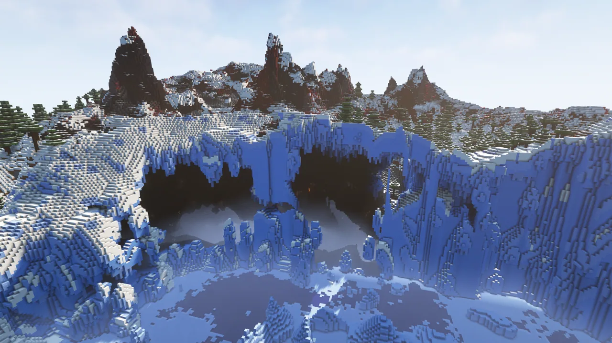
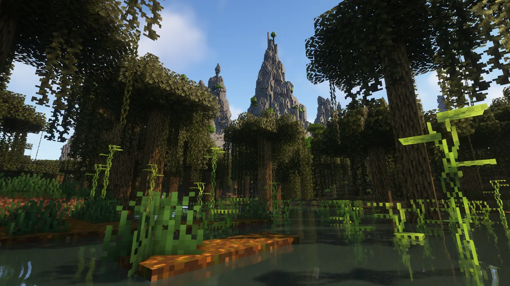
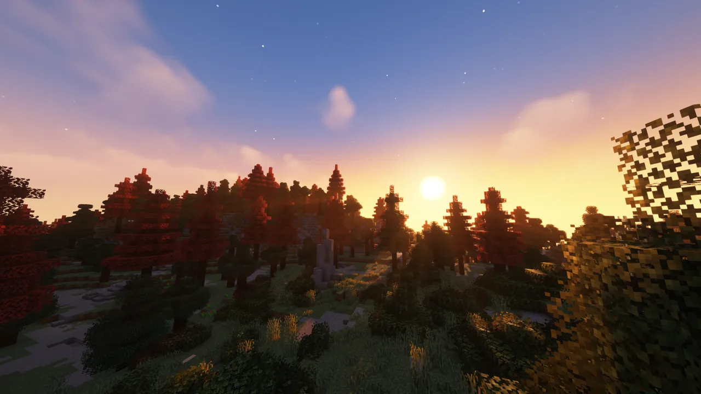
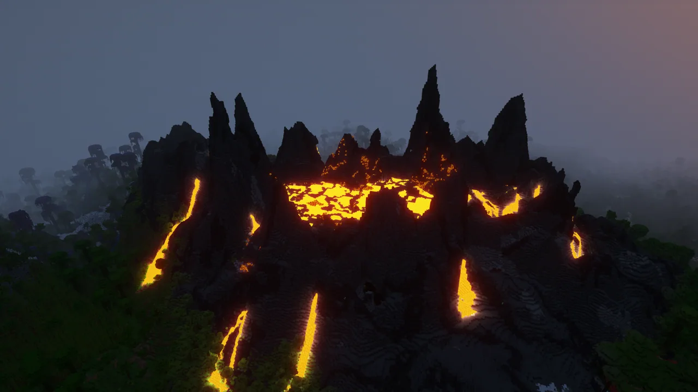
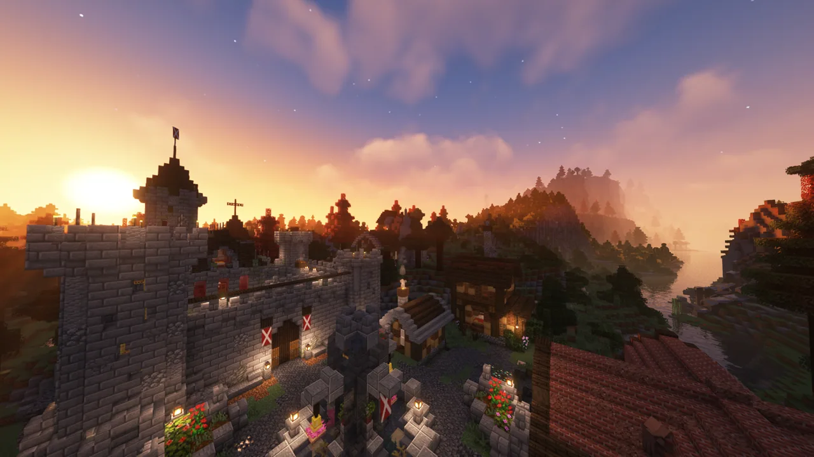
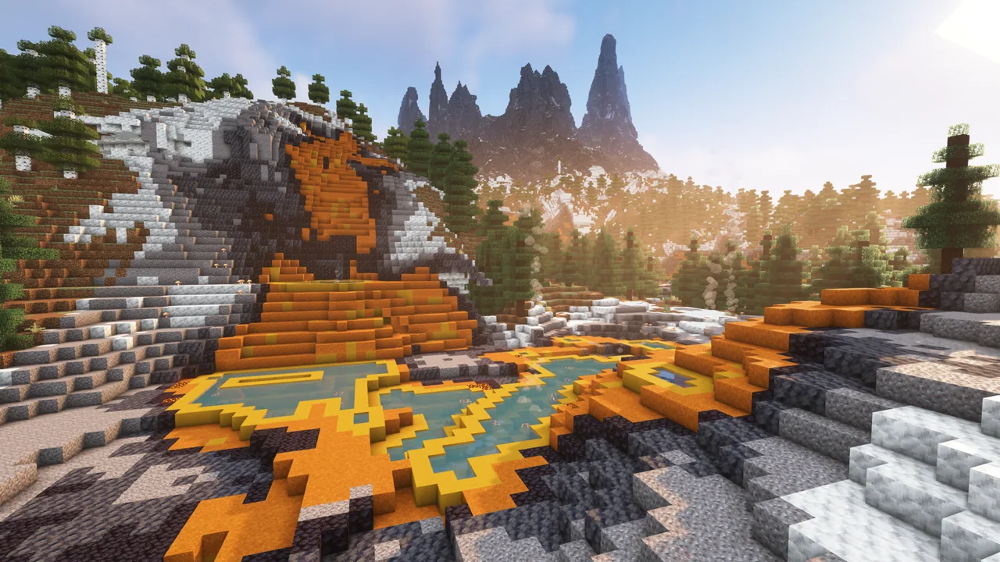
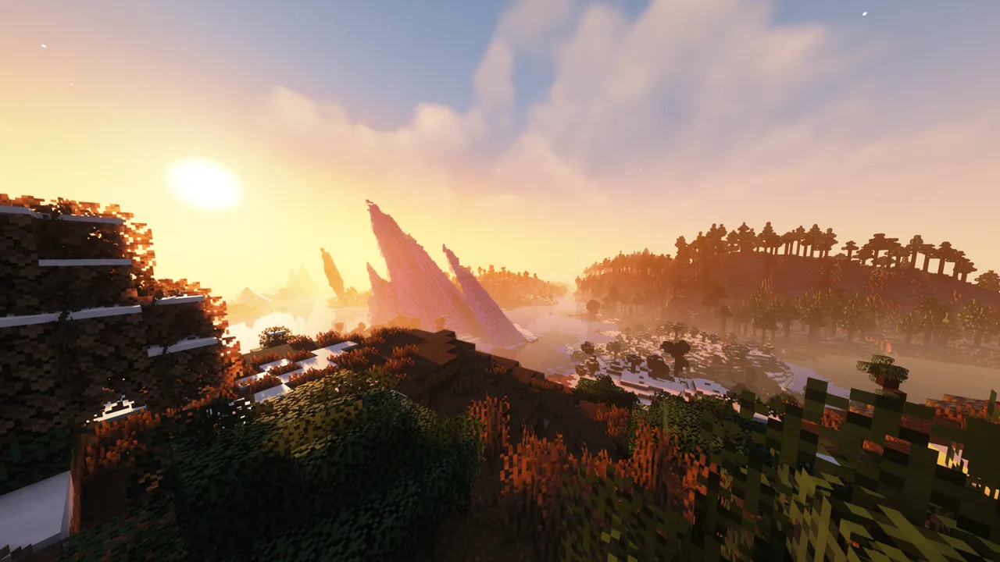

「探险系」 玩法是指 以主动寻求未知、发现新奇景观、揭开世界秘密和体验探索过程本身作为核心乐趣与主要驱动力的 Minecraft 玩法。 玩家扮演无畏的探索者或冒险家，将游戏世界视为一个充满奇迹、危险和未解之谜的庞大未知领域，其核心体验在于踏上旅程、穿越多样环境、遭遇意外事件并沉浸于发现所带来的纯粹惊喜与满足感。
真实自然地形
三个数据包彻底改造了主世界、下界、末地的地形。
你还需要一个强劲的光影，推荐Complementary、Photon。
主世界















Terralith 新增了超过 95 个全新的生物群系，并对几乎所有原版生物群系进行了更新，添加了新的功能和改进。同时还引入了新的地形类型：峡谷、破碎群系、浮空岛屿、深海沟渠等等，内容极其丰富。
黄石群系 是 Terralith 的代表性群系之一：一个基于现实中的美国国家公园打造的简约而美丽的景观。在众多逼真的群系列表中，还有 优胜美地崖壁群系 (Yosemite Cliffs)、地盾群系 (Shield) 等等，具体取决于您想在生物群系中寻找什么样的体验。高地群系及其变种 提供了平坦的地表供您建造——建造者可以尽情想象，从巨型都市到简朴的小屋皆可实现。冒险者则可以探索令人惊叹的 火山峰群系 (Volcanic Peaks)，并发现美丽的 沙漠绿洲群系 (Desert Oases)。
虽然这些逼真的群系能让我们想起所居住的美丽星球，但 Terralith 也带领我们沉浸于奇幻世界之中。冒险者可以在 紫意盎然、神秘奇幻的月光丛林 (Moonlight Grove) 和 紫水晶雨林 (Amethyst Rainforest) 中漫步，或是攀登 猩红山脉 (Scarlet Mountains) 那险峻的峭壁。如果有决心，航海者或许能找到神秘的 幻影群岛 (Mirage Isles)，甚至是那难以捉摸、令人怀旧的 阿尔法群岛 (Alpha Islands)。在这里，Terralith 鼓励想象力尽情驰骋。
如果您觉得地表世界太过平淡，别担心——定制洞窟 就在您的脚下潜伏！与 Minecraft 的 繁茂洞穴 (Lush Cave) 类似，地下丛林 (Underground Jungle) 中遍布着茂密的植被，偶尔还能发现一些废弃的古老房屋。其他洞窟，如 虫蚀洞窟 (Infested Caves) 和 真菌洞窟 (Fungal Caves)，则布满了蜘蛛和真菌！如果您挖掘得足够深，可能会偶然发现 幽匿洞窟 (Deep Dark) 的姊妹洞窟：霜焰洞窟 (Frostfire Caves)——它们危险而令人畏惧。小心！
虽然官方的演示图片很美观，但目前服务器内并没有找到类似的美景，毕竟物以稀为贵。
下界
Incendium 将下界的基岩层高度提升至 192 格，并为下界增添了 8 个独特的生物群系。您是勇敢地穿越险峻的石英平地 (Quartz Flats)，漫步于神秘的枯焦森林 (Withered Forest)，还是在陡峭的炼狱沙丘 (Infernal Dunes)中杀出一条血路？每个生物群系都有其独特的个性和故事要讲述。每个群系都拥有独特的方块主题，为技术型玩家提供了打造新农场的机会，加上3D生物群系技术和令人惊叹的地形，这里确实能满足每个人的口味。
Incendium的自定义结构、物品、生物会在PVE系玩法里介绍。
末地
Nullscape将让你在浩瀚的末地中感受到自身的渺小与孤独。唯你与虚空对峙——仅此而已。
Nullscape 将末地的高度上限提升至 384 格，并充分利用 1.18 版本的现代特性，生成极其多样的地形。你将发现从破碎的岛屿、漂浮的山谷到结晶的山峰等一切奇观！
末地的不同区域——在非常宏大的尺度上——拥有各异的特性和氛围，使得地形形态几乎拥有无限的变化可能。从海绵般多孔的地形、延展的外星地貌到堆叠的圆形岛屿；无论你探索多远，总能发现新奇有趣的地形。
自然建筑
主世界
数据包：Just Another Structure Pack
DNT当前没有实装到2nd-内！
在沼泽深处，可以发现红树林遗迹 (Mangrove Ruins)...但若你敢于冒险进入寒冷地带，则可能偶然发现针叶林遗迹 (Taiga Ruins)。这些古老的建筑群系试图诉说着怎样的往事？
传说在古老庄园 (Old Manor) 中可以找到邪恶的女巫，她们正在酿造某种神秘物品。但若你游荡得太远，可能会发现自己被困在一个罕见的墓地 (Graveyard) 之中。
村庄与掠夺者哨塔将会变得多元化。
末地
DNT当前没有实装到2nd-内！
最后编辑于2025年7月26 日